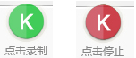
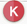
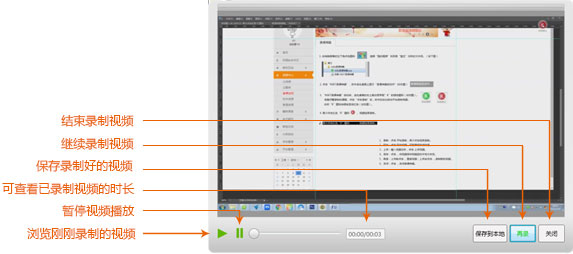

请先下载K6KT录课神器,推荐选择安装在本地磁盘较大的位置。
使用“K6KT录课神器”，您可以选择在线平台启动软件。第一次网页端启动软件，软件会弹出“外部协议请求”窗口，可按图2进行操作。
"K6KT录课神器"启动后，会在桌面的右上角出现带有“K”的绿色图标（如右图）。准备好后，点击“点击录制”后，软件在后台开始录制视屏。此时“K”图标由绿色变成红色（如右图）
再次点击红色“K”图标
，,视屏结束录制.结束录制后，自动弹出视屏窗口。
>此时可以选择浏览器您所录制的视屏，对录制的视屏满意后，您可以将视频保存在电脑的任意位置。
